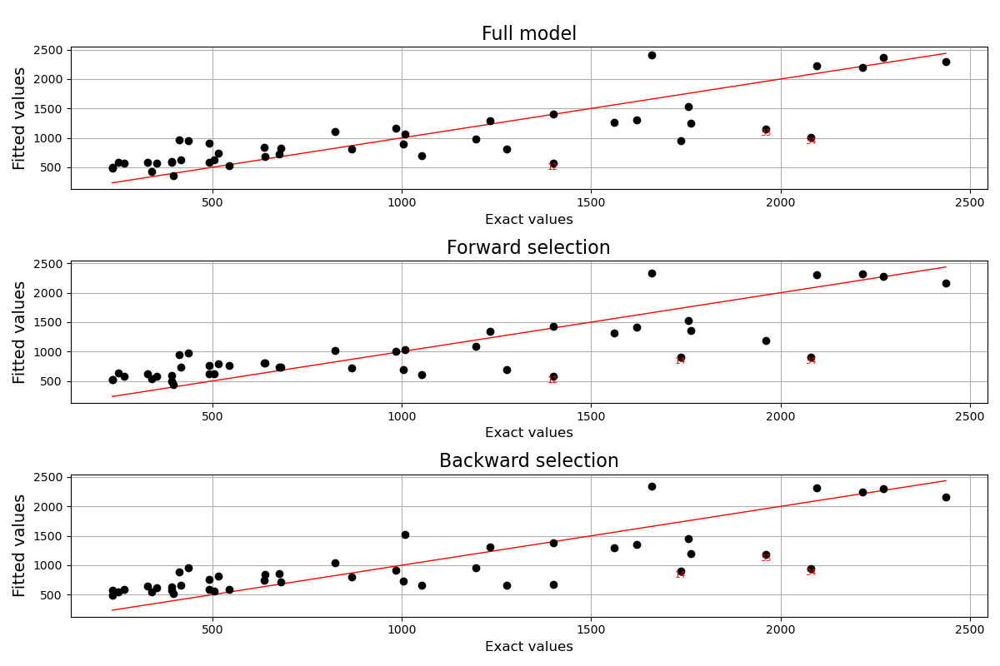
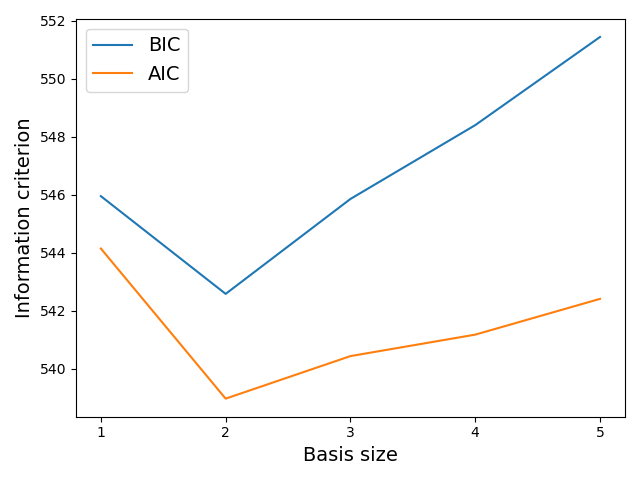

Note
Go to the end to download the full example code
Perform stepwise regression¶
In this example we perform the selection of the most suitable function basis for a linear regression model with the help of the stepwise algorithm.
We consider te so-called Linthurst data set, which contains measures of aerial biomass (BIO) as well as 5 five physicochemical properties of the soil: salinity (SAL), pH, K, Na, and Zn.
The data set is taken from the book [rawlings2001] and is provided below:
import openturns as ot
from openturns.viewer import View
import numpy as np
import matplotlib.pyplot as plt
from openturns.usecases import linthurst
We define the data.
ds = linthurst.Linthurst()
dimension = ds.data.getDimension() - 1
input_sample = ds.data[:, 1: dimension + 1]
print("Input :")
print(input_sample[:5])
output_sample = ds.data[:, 0]
print("Output :")
print(output_sample[:5])
input_description = input_sample.getDescription()
output_description = output_sample.getDescription()
n = input_sample.getSize()
print("n = ", n)
dimension = ds.data.getDimension() - 1
print("dimension = ", dimension)
Input :
[ SAL pH K Na Zn ]
0 : [ 33 5 1441.67 35185.5 16.4524 ]
1 : [ 35 4.75 1299.19 28170.4 13.9852 ]
2 : [ 32 4.2 1154.27 26455 15.3276 ]
3 : [ 30 4.4 1045.15 25072.9 17.3128 ]
4 : [ 33 5.55 521.62 31664.2 22.3312 ]
Output :
[ BIO ]
0 : [ 676 ]
1 : [ 516 ]
2 : [ 1052 ]
3 : [ 868 ]
4 : [ 1008 ]
n = 45
dimension = 5
Complete linear model¶
We consider a linear model with the purpose of predicting the aerial biomass as a function of the soil physicochemical properties, and we wish to identify the predictive variables which result in the most simple and precise linear regression model.
We start by creating a linear model which takes into account all of the physicochemical variables present within the Linthrust data set.
Let us consider the following linear model ![\tilde{Y} = a_0 + \sum_{i = 1}^{d} a_i X_i + \epsilon]() . If all of the predictive variables
are considered, the regression can be performed with the help of the
. If all of the predictive variables
are considered, the regression can be performed with the help of the LinearModelAlgorithm class.
algo_full = ot.LinearModelAlgorithm(input_sample, output_sample)
algo_full.run()
result_full = ot.LinearModelResult(algo_full.getResult())
print("R-squared = ", result_full.getRSquared())
print("Adjusted R-squared = ", result_full.getAdjustedRSquared())
R-squared = 0.677310820565376
Adjusted R-squared = 0.6359404129455524
Forward stepwise regression¶
We now wish to perform the selection of the most important predictive variables through a stepwise algorithm.
It is first necessary to define a suitable function basis for the regression. Each variable is associated to a univariate basis
and an additional basis is used in order to represent the constant term  .
.
functions = []
functions.append(ot.SymbolicFunction(input_description, ["1.0"]))
for i in range(dimension):
functions.append(ot.SymbolicFunction(input_description, [input_description[i]]))
basis = ot.Basis(functions)
Plese note that this example uses a linear basis with respect to the various predictors for the sake of clarity. However, this is not a necessity, and more complex and non linear relations between predictors may be considered (e.g., polynomial bases).
We now perform a forward stepwise regression. We suppose having no information regarding the given data set, and therefore the set of minimal indices only contains the constant term (indexed by 0).
The first regression is performed by relying on the Akaike Information Criterion (AIC), which translates into a penalty term equal to 2. In practice, the algorithm selects the functional basis subset that minimizes the AIC by iteratively adding the single function which provides the largest improvement until convergence is reached.
minimalIndices = [0]
direction = ot.LinearModelStepwiseAlgorithm.FORWARD
penalty = 2.0
algo_forward = ot.LinearModelStepwiseAlgorithm(
input_sample, output_sample, basis, minimalIndices, direction
)
algo_forward.setPenalty(penalty)
algo_forward.run()
result_forward = algo_forward.getResult()
print("Selected basis: ", result_forward.getCoefficientsNames())
print("R-squared = ", result_forward.getRSquared())
print("Adjusted R-squared = ", result_forward.getAdjustedRSquared())
Selected basis: [[SAL,pH,K,Na,Zn]->[1.0],[SAL,pH,K,Na,Zn]->[pH],[SAL,pH,K,Na,Zn]->[Na]]
R-squared = 0.658432822226285
Adjusted R-squared = 0.6421677185227748
With this first forward stepwise regression, the results show that the selected optimal basis contains a constant term, plus two linear terms depending respectively on the pH value (pH) and on the sodium concentration (Na).
As can be expected, the R-squared value diminishes if compared to the regression on the entire basis, as the stepwise regression results in a lower number of predictive variables. However, it can also be seen that the adjusted R-squared, which is a metric that also takes into account the ratio between the amount of training data and the number of explanatory variables, is improved if compared to the complete model.
Backward stepwise regression¶
We now perform a backward stepwise regression, meaning that rather than iteratively adding predictive variables, we will be removing them,
starting from the complete model.
This regression is performed by relying on the Bayesian Information Criterion (BIC), which translates into a penalty term equal to  .
.
minimalIndices = [0]
direction = ot.LinearModelStepwiseAlgorithm.BACKWARD
penalty = np.log(n)
algo_backward = ot.LinearModelStepwiseAlgorithm(
input_sample, output_sample, basis, minimalIndices, direction
)
algo_backward.setPenalty(penalty)
algo_backward.run()
result_backward = algo_backward.getResult()
print("Selected basis: ", result_backward.getCoefficientsNames())
print("R-squared = ", result_backward.getRSquared())
print("Adjusted R-squared = ", result_backward.getAdjustedRSquared())
Selected basis: [[SAL,pH,K,Na,Zn]->[1.0],[SAL,pH,K,Na,Zn]->[pH],[SAL,pH,K,Na,Zn]->[K]]
R-squared = 0.6475759074104157
Adjusted R-squared = 0.6307938077632926
It is interesting to point out that although both approaches converge towards a model characterized by 2 predictive variables, the selected variables do not coincide.
Both directions stepwise regression¶
A third available option consists in performing a stepwise regression in both directions, meaning that at each iteration the predictive variables can be either added or removed. In this case, a set of starting indices must be provided to the algorithm.
minimalIndices = [0]
startIndices = [0, 2, 3]
penalty = np.log(n)
direction = ot.LinearModelStepwiseAlgorithm.BOTH
algo_both = ot.LinearModelStepwiseAlgorithm(
input_sample, output_sample, basis, minimalIndices, direction, startIndices
)
algo_both.setPenalty(penalty)
algo_both.run()
result_both = algo_both.getResult()
print("Selected basis: ", result_both.getCoefficientsNames())
print("R-squared = ", result_both.getRSquared())
print("Adjusted R-squared = ", result_both.getAdjustedRSquared())
Selected basis: [[SAL,pH,K,Na,Zn]->[1.0],[SAL,pH,K,Na,Zn]->[pH],[SAL,pH,K,Na,Zn]->[K]]
R-squared = 0.6475759074104157
Adjusted R-squared = 0.6307938077632926
It is interesting to note that the basis varies depending on the selected set of starting indices, as is shown below. An informed initialization might therefore improve the model selection and the resulting regression
minimalIndices = [0]
startIndices = [0, 1]
penalty = np.log(n)
direction = ot.LinearModelStepwiseAlgorithm.BOTH
algo_both = ot.LinearModelStepwiseAlgorithm(
input_sample, output_sample, basis, minimalIndices, direction, startIndices
)
algo_both.setPenalty(penalty)
algo_both.run()
result_both = algo_both.getResult()
print("Selected basis: ", result_both.getCoefficientsNames())
print("R-squared = ", result_both.getRSquared())
print("Adjusted R-squared = ", result_both.getAdjustedRSquared())
Selected basis: [[SAL,pH,K,Na,Zn]->[1.0],[SAL,pH,K,Na,Zn]->[pH],[SAL,pH,K,Na,Zn]->[Na]]
R-squared = 0.658432822226285
Adjusted R-squared = 0.6421677185227748
Graphical analyses¶
Finally, we can rely on the LinearModelAnalysis class in order to analyse the predictive differences between the obtained models.
analysis_full = ot.LinearModelAnalysis(result_full)
analysis_full.setName("Full model")
analysis_forward = ot.LinearModelAnalysis(result_forward)
analysis_forward.setName("Forward selection")
analysis_backward = ot.LinearModelAnalysis(result_backward)
analysis_backward.setName("Backward selection")
fig = plt.figure(figsize=(12, 8))
for k, analysis in enumerate([analysis_full, analysis_forward, analysis_backward]):
graph = analysis.drawModelVsFitted()
ax = fig.add_subplot(3, 1, k + 1)
ax.set_title(analysis.getName(), fontdict={"fontsize": 16})
graph.setXTitle("Exact values")
ax.xaxis.label.set_size(12)
ax.yaxis.label.set_size(14)
graph.setTitle("")
v = View(graph, figure=fig, axes=[ax])
plt.tight_layout()

For illustrative purposes, we show the Bayesian Information Criterion (BIC) and Akaike Information Criterion (AIC) values which are computed during the iterations of the forward step-wise regression. Please note that in order to do so, we set the penalty parameter to a negligible value (meaning that the basis selection only takes into account the model likelihood, and not the number of parameters characterizing the linear model).
minimalIndices = [0]
penalty = 1e-10
direction = ot.LinearModelStepwiseAlgorithm.FORWARD
BIC = []
AIC = []
for iterations in range(1, 6):
algo_forward = ot.LinearModelStepwiseAlgorithm(
input_sample, output_sample, basis, minimalIndices, direction
)
algo_forward.setPenalty(penalty)
algo_forward.setMaximumIterationNumber(iterations)
algo_forward.run()
result_forward = algo_forward.getResult()
RSS = np.sum(
np.array(result_forward.getSampleResiduals()) ** 2
) # Residual sum of squares
LL = n * np.log(RSS / n) # Log-likelihood
BIC.append(LL + iterations * np.log(n)) # Bayesian Information Criterion
AIC.append(LL + iterations * 2) # Akaike Information Criterion
print("Selected basis: ", result_forward.getCoefficientsNames())
plt.figure()
plt.plot(np.arange(1, 6), BIC, label="BIC")
plt.plot(np.arange(1, 6), AIC, label="AIC")
plt.xticks(np.arange(1, 6))
plt.xlabel("Basis size", fontsize=14)
plt.ylabel("Information criterion", fontsize=14)
plt.legend(fontsize=14)
plt.tight_layout()

Selected basis: [[SAL,pH,K,Na,Zn]->[1.0],[SAL,pH,K,Na,Zn]->[pH]]
Selected basis: [[SAL,pH,K,Na,Zn]->[1.0],[SAL,pH,K,Na,Zn]->[pH],[SAL,pH,K,Na,Zn]->[Na]]
Selected basis: [[SAL,pH,K,Na,Zn]->[1.0],[SAL,pH,K,Na,Zn]->[pH],[SAL,pH,K,Na,Zn]->[Na],[SAL,pH,K,Na,Zn]->[Zn]]
Selected basis: [[SAL,pH,K,Na,Zn]->[1.0],[SAL,pH,K,Na,Zn]->[pH],[SAL,pH,K,Na,Zn]->[Na],[SAL,pH,K,Na,Zn]->[Zn],[SAL,pH,K,Na,Zn]->[SAL]]
Selected basis: [[SAL,pH,K,Na,Zn]->[1.0],[SAL,pH,K,Na,Zn]->[pH],[SAL,pH,K,Na,Zn]->[Na],[SAL,pH,K,Na,Zn]->[Zn],[SAL,pH,K,Na,Zn]->[SAL],[SAL,pH,K,Na,Zn]->[K]]
The graphic above shows that the optimal linear model in terms of compromise between prediction likelihood and model complexity should take into account the influence of 2 regession variables as well as the constant term. This is coherent with the results previously obtained